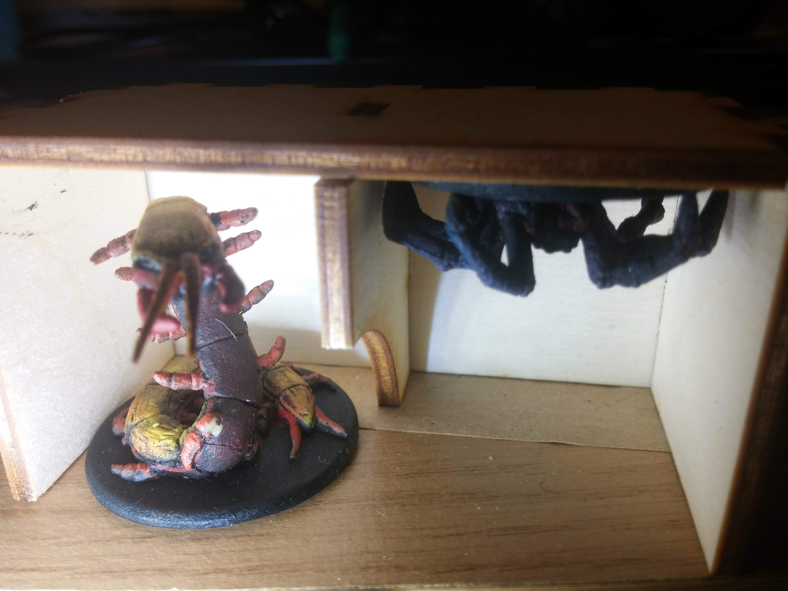
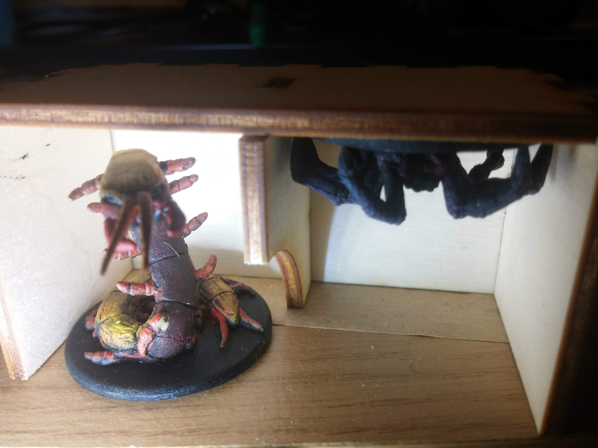

Compressed inserts for board games
Board games are often sold in boxes that are bigger than necessary to fit the game elements. It makes sense from a marketing perspective: oversized shiny covers are better at grabbing the attention of buyers in a shop. Once bought, the big boxes are a pain: they are problematic when moving homes and take more shelf-size than needed. For this reason, at the end of 2018, we tried to design new, smaller boxes for board games with my girlfriend.
Technology choice
We decided to make the box by cutting it from plywood with a laser cutter.
To get started, we generated a generic box design using a Box Designer website (another generator is available at makebox.io).
Inkscape workflow
We edited the box in Inkscape by adding and removing notches and adding separators. The goal was to create several small boxes to fit the elements of a Mice and Mystics game.
In the process of doing so, we improved our Inkscape skills. The features we learned and used the most were snapping, guides, and align-and-distribute. They helped to keep everything of perfect size (including keeping lines centered around where they should be).
Kerf
One reason we wanted to keep all the sizes exact is kerf. Kerf is the width of the cut that the laser cutter makes in the wood. It’s generally small (in our case we the kerf was around 0.1mm), but it’s still necessary to take it into account to make the box’ notches stick together.
Let’s imagine we create a design file with a notch of size 10mm and the corresponding hole to be 10mm, too. If we cut the file as-is, with 0.1mm kerf, we’ll end up with a notch of size around 9.9mm (we’ll lose half of the kerf on both sides of the notch) and a 10.1mm hole. The leeway of 0.2mm will make the connection loose and useless.
Instead, we should adjust their sizes, such that the notch can barely enter the hole: the wood can compress a little when joining the elements, and the pressure will keep them together.
I tried to find a way to achieve that in Inkscape automatically, but I didn’t find a satisfactory way of doing so. Some of the tutorials I found didn’t work with Paths instead of Objects or were only able to increase the size of the notch but not to make the hole smaller.
To get the effect I wanted, I wrote a small Inkscape extension (code here).
In the end, this is how one of the Mice and Mystics boxes turned out:
 

Time stories
After getting some experience with smaller boxes, we moved to make a single, complex box for T.I.M.E stories. The original box is notoriously oversized: all elements are relatively small (a couple of dices, pawns, and cardboard tokens), but the box is probably the biggest one I (used to :) own.
The overall process was the same as with the smaller boxes: measuring elements, choosing the compartments, and drawing them in Inkscape. One new feature I played with here was engraving: making a mark in the wood that isn’t deep enough to cut it through.
Here, I decided to put numbers next to the holes: they can be kept barely visible, yet they are very convenient when assembling a complex box with multiple inner compartments.
When kerf is chosen correctly, the notches are keeping together surprisingly sturdily. Because of that, I didn’t want to use the notches for the cover: it’s going to be opened and closed often, and disassembling the notched connection took a bit of effort. Instead, I decided to go for the sliding cover and a small engraving in the walls to fit the cover.
When printing, the cuts should be done starting with engraving and then moving from the inner cuts to the outer ones: the wood can otherwise move a bit when popping out of the sheet, and the future cuts will be made inaccurate.
The size of the final box ended up to be 12.5cm x 16cm x 3.1cm, compared to 30cm x 30cm x 7.6 cm of the original box.Board
The original Time Stories box is big but also fits a substantial game board. Michalina decided to draw a new, more compact board to print it later.
We wanted to fit the board in an A-something format because it’s easy to print and store. We managed to arrange the whole board on a sheet of A2, but to do so, we had to evict the codex cards outside the board, leaving on a border only indicators on where they should go.
Michalina designed the functional elements in Inkscape and finished the look in (raster) Krita. She drew the background in Krita and traced the vector lines with a brush using a neat Krita feature (Edit->Stroke selected shapes).
We printed the board on two A3 sheets of good quality and nicely covered it with a transparent film… and then forgot to take it with us on holiday, so we printed it again on regular A4 paper.
{kind=link}
Costs
So, how much does making a box like this cost?
In terms of time, it took us probably around 10 hours to get comfortable enough with Inkscape, probably another 4 hours to design a new box and an hour or two to cut and assemble it.
In terms of the materials, the main cost would have been the amortization of a laser cutter: these devices tend to cost a couple of thousand dollars. We had access to one for free in the company we worked at, so no cost for us.
For a box like a time-stories one, we needed three A4 sheets of plywood (after arranging elements nicely). We bought a box of 20 sheets on Amazon for 2£, so the cost here was 30p per box (if not counting that we didn’t end up using all of the plywood sheets).
Final words
The files to cut the box and print the board are available here. Overall, this project was a lot of fun and we’ll likely do more of these in the future.